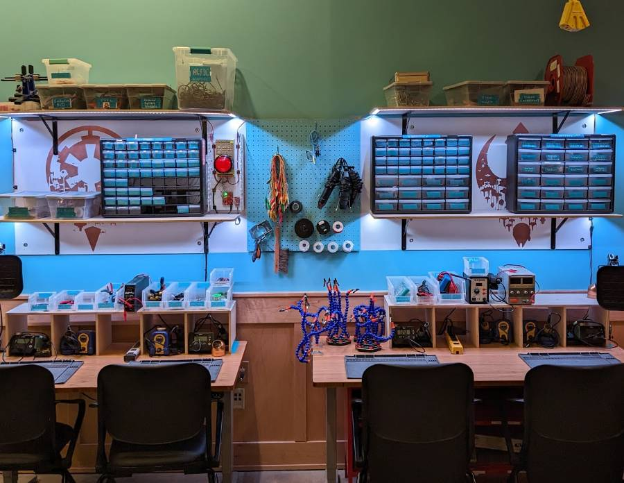

Electronics
Electronics equipment is labeled... THIS COLOR!
With great power...
Training

Electronics and coding training happens as requested by staff and/or community members. It is also the subject of some ATLAS classes and BTU workshops. See workshops on the BTU Lab Calendar.
See the BTU Mischief Makers page to contact one of our community experts to get you started.
Equipment & Supplies
- Solder irons & accessories
- Bench top power supplies
- Soldering rework station
- Digital oscilloscope
- Arduino / Raspberry Pi ecosystem
- Various power components (V=I*R stuff!)
- Different input components
- Multiple output components
- LilyPad
- Prototyping supplies
- Uhhhh AND MORE!